1. Project Overview
Financy is a self-contained, local-first personal finance and zero-based budgeting (ZBB) program for Linux, Windows, macOS, and Android. It combines envelope budgeting (give every unit of currency a job until Ready to Assign reaches zero) with a strict double-entry accounting engine.
Unlike cloud-hosted budgeting services, Financy requires no user account,
makes no background network requests (except when you explicitly check GitHub
for software updates), and stores your entire financial ledger in a single
portable .financy SQLite database file on your local filesystem.
Documents can optionally be encrypted at rest using authenticated encryption
(XChaCha20-Poly1305 with an Argon2id key derivation function).
All monetary quantities are stored and computed as exact 64-bit integer minor units (cents) to eliminate IEEE-754 floating-point rounding drift. Account balances, category envelopes, debt amortization schedules, and net-worth reports are derived directly from the underlying posting journal.
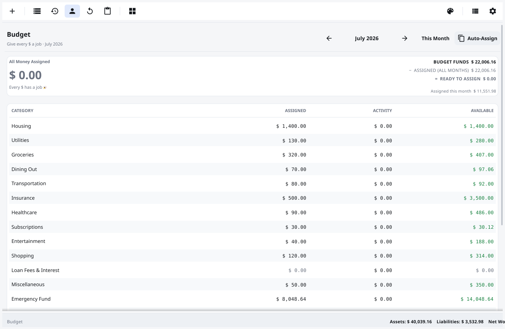
2. Architecture & Accounting Invariants
Financy enforces three core invariants across both desktop (internal/ui)
and mobile (internal/mobileui) interfaces via a shared core library
(internal/core):
+-----------------------------------------------------------------------------------+
| SINGLE .financy DOCUMENT (SQLite) |
| [Unencrypted SQLite] --or-- [XChaCha20-Poly1305 + Argon2id In-Memory VFS] |
+-----------------------------------------------------------------------------------+
|
v
+-----------------------------------------------------------------------------------+
| DOUBLE-ENTRY JOURNAL (internal/core) |
| Invariant 1 (Balanced Journal): For every Transaction T, Sum(Postings_T) == 0 |
| Invariant 2 (Derived Balances): Balance(Account A, t) = Sum(Postings_A <= t) |
| Invariant 3 (Zero-Based Pool): ReadyToAssign = OnBudgetCash - Sum(Assigned) |
+-----------------------------------------------------------------------------------+
/ \
v v
+---------------------------------+ +---------------------------------+
| Desktop Shell (internal/ui) | | Mobile Shell (internal/mobile) |
| Linux / Windows / macOS | | Android Touch UI (16KB ELF) |
+---------------------------------+ +---------------------------------+| Design Principle | Technical Implementation |
|---|---|
| 1. Strict Double-Entry | Every transaction records two or more balanced legs (postings) whose signed integer amounts sum to zero. Income credits an Income account and debits an Asset/Liability account; expenses debit an Expense category and credit the payment account; transfers move funds between money accounts with zero net budget impact. |
| 2. Global Ready-to-Assign |
Ready to Assign is computed from the real cash balance of all on-budget accounts
(checking, savings, cash, net of on-budget credit cards) minus all category assignments across every month.
Assigning funds in a future month immediately reduces today's assignable pool, preventing phantom budgeting.
|
| 3. Local-First & Encrypted | Changes are committed atomically via ACID transactions. When passphrase protection is enabled, the file on disk stores an Argon2id salt, nonce, and XChaCha20-Poly1305 ciphertext; decryption occurs strictly in RAM so plaintext never touches disk. |
| 4. Automatic Schema Migration |
Opening an older .financy file automatically writes a versioned backup
(e.g., budget.financy.v8.bak) before migrating the schema forward, ensuring safe downgrades.
|
3. Core Capabilities & Modules
| Module | Summary | Details & Operations |
|---|---|---|
| Zero-Based Budget ( Budget) |
Monthly envelope allocation, rollover, and overspending recovery |
Tracks Assigned, Activity, and rolling Available balances per category.
Includes per-category traffic-light progress bars, overspent alert banners, one-click
Cover Overspending (MoveAssigned between envelopes), and guarded Auto-Assign
with a diff preview popup before overwriting existing assignments.
|
| Accounts & Register ( Accounts) |
Grouped Assets & Liabilities with running-balance registers | Supports On-Budget accounts (Checking, Savings, Cash, Credit Card) and Off-Budget / Tracking accounts (Investments, Mortgages, Loans). Displays share-of-group bars, aligned balances, per-account running registers, and guided bank statement reconciliation. |
| Transactions Journal ( Transactions) |
Date-grouped ledger, bulk entry, search, and CSV import | Filter by date range, account, category, transaction type, or free-text query. Features searchable payee autocomplete across all forms, a multi-row Bulk Add table for rapid bookkeeping, and a guided CSV importer with column mapping and duplicate detection. |
| Debts & Amortization ( Debts) |
BNPL installments, amortizing loans, revolving credit, and IOUs |
Full debt management engine (Schema v9):
|
| Recurring Commitments ( Recurring) |
Forward-looking 30-day timeline & periodic due checks | Models recurring bills, subscriptions, and income templates across daily, weekly, biweekly, monthly, quarterly, and yearly intervals. Computes monthly commitment totals, a 30-day upcoming timeline, and prompts when due items are ready to post. |
| Analytics ( Analytics) |
Journal-derived KPIs, cash flow, and net-worth history | Computes savings rate, income vs. expenses, net-worth progression, and category spending breakdowns directly from journal postings, guaranteed never to drift from your register. |
4. Desktop Interface (Linux, Windows, macOS)
The desktop interface uses a labeled left navigation sidebar, keyboard-friendly forms, custom modals,
and both Light and Dark palettes (internal/ui/style).


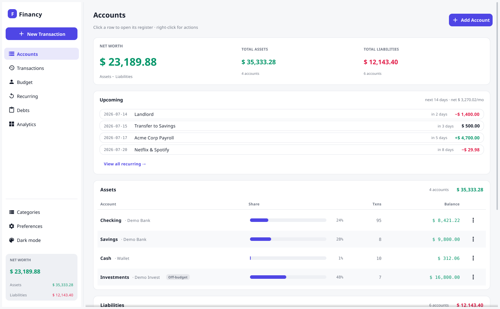

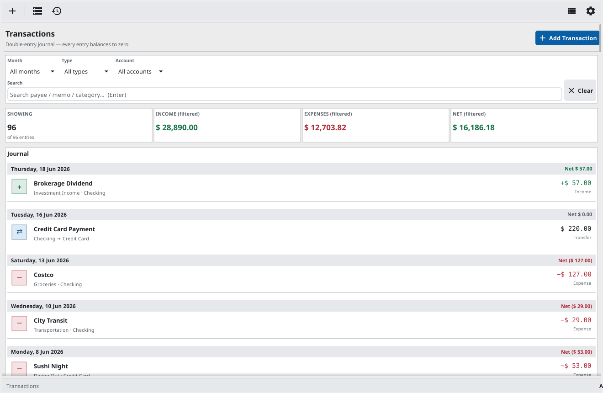

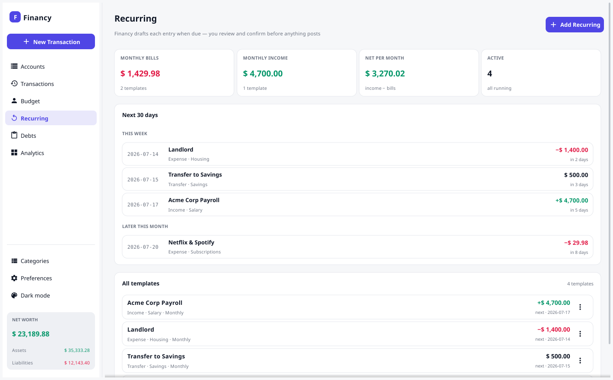

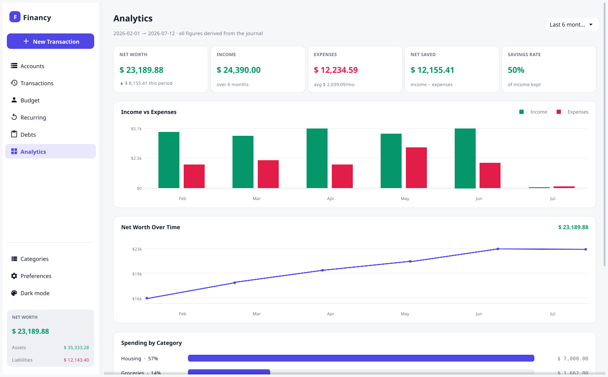

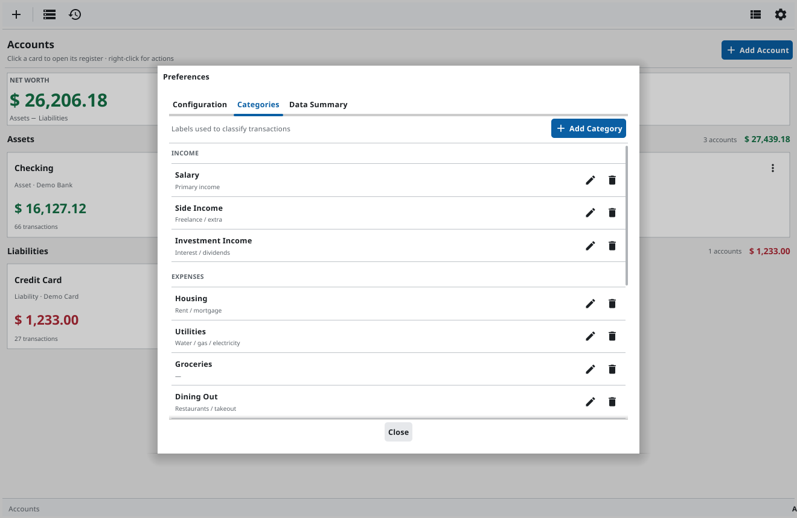
5. Mobile Interface - Android (Beta)
Financy compiles a dedicated touch-first mobile shell (internal/mobileui) from the same Go
codebase and internal/core engine. It supports opening and exporting cross-platform
.financy files (including encrypted databases), a speed-dial floating action button for single
or bulk transaction entry, tappable calendar date pickers, and full debt/budget drill-downs.
See MOBILE.md for platform notes.

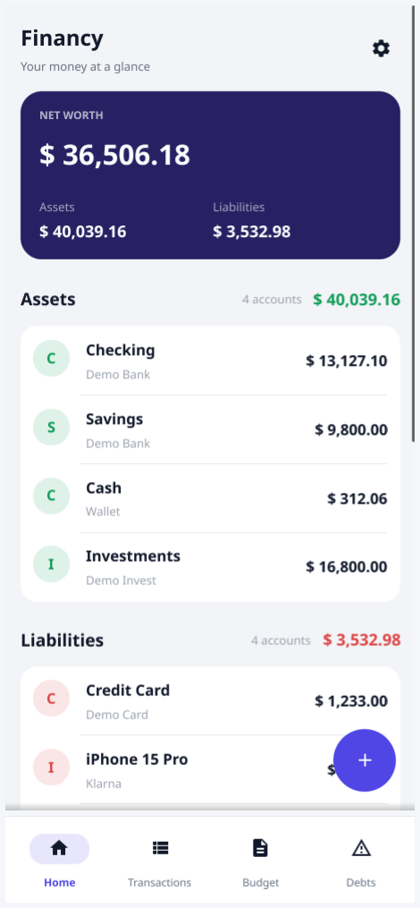

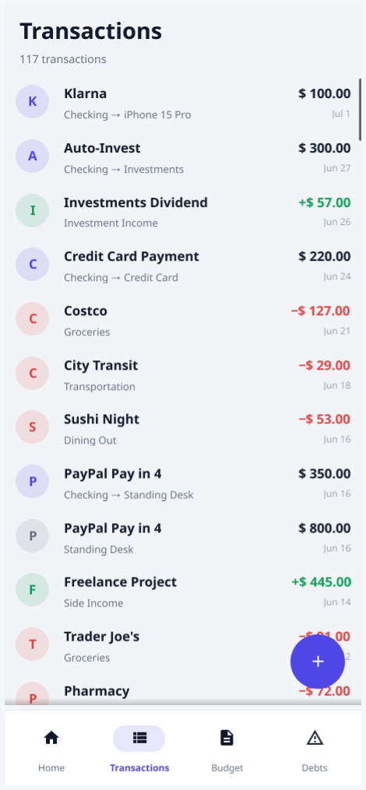

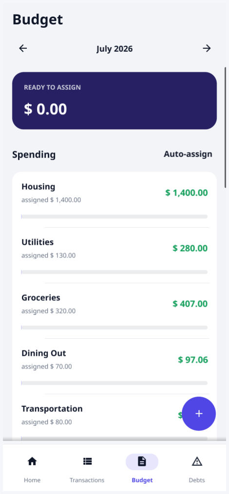

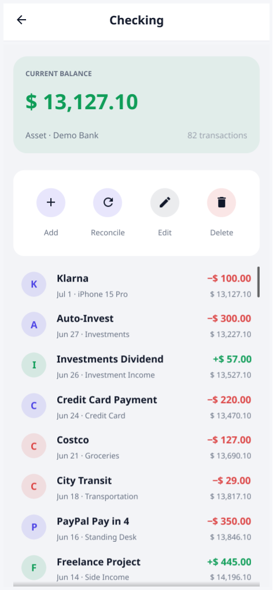

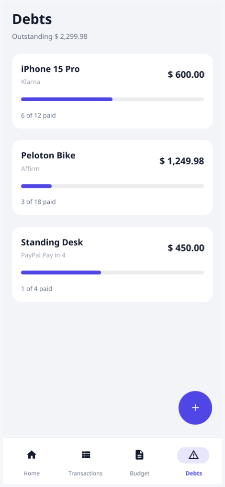

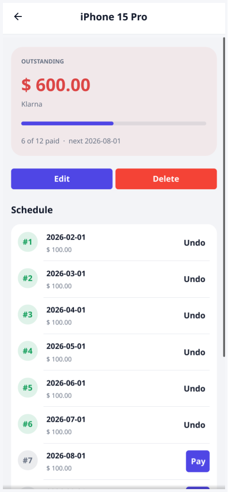
6. Download & Installation
Pre-built binaries for the latest release (v0.14.0) are published on GitHub Releases:
| Operating System | Package / Artifact | Installation & First-Run Notes |
|---|---|---|
| Linux (Debian/Ubuntu) | financy_*_linux_amd64.deb |
Install via sudo apt install ./financy_*_linux_amd64.deb. Installs binary to
/usr/bin/financy, desktop launcher, icon, and registers the .financy MIME type.
|
| Linux (Fedora/RHEL) | financy-*.x86_64.rpm |
Install via sudo dnf install ./financy-*.x86_64.rpm. Includes desktop entry and MIME association.
|
| Linux (Generic Tarball) | Financy-*-linux-amd64.tar.xz |
Extract with tar xf Financy-*-linux-amd64.tar.xz and run ./Financy (or make install).
|
| Windows (x86_64) | Financy-*-windows-amd64.exe |
Standalone executable. Because builds are currently unsigned, click More info → Run anyway if Windows SmartScreen prompts on first launch. |
| macOS (Universal/ARM64) | Financy-*-macos.zip |
Unzip and move Financy.app to /Applications. On first launch,
right-click → Open (or run xattr -cr /Applications/Financy.app).
|
| Android (Beta) | Financy-*-android.apk |
Sideload the signed .apk from the GitHub Release page (16 KB ELF page-aligned for Android 15+).
|
6.1 Building from Source
Building from source requires Go 1.25+, a C compiler (gcc or clang),
and standard OpenGL/X11 development headers required by Fyne:
# Debian / Ubuntu dependencies:
sudo apt-get install gcc pkg-config libgl1-mesa-dev xorg-dev
# Clone and build:
git clone https://github.com/raihanstark/financy.git
cd financy
make build # produces ./Financy binary
make test # runs unit & accounting invariant tests
make run-dev # runs against an isolated ./.devdata profile